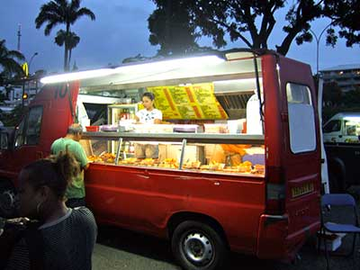
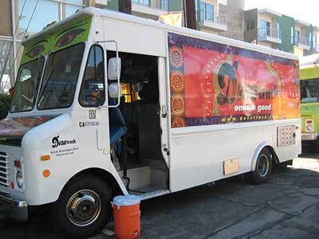
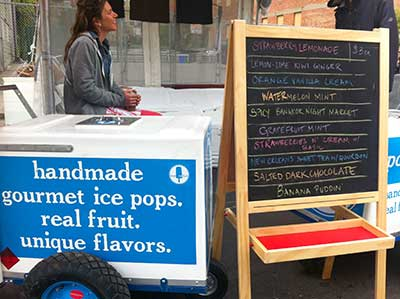
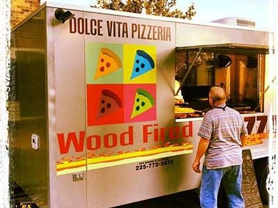
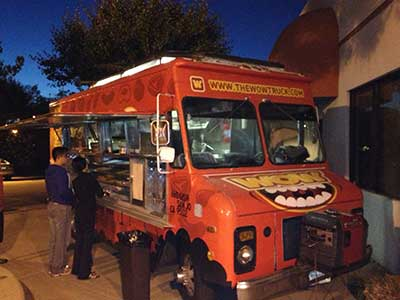
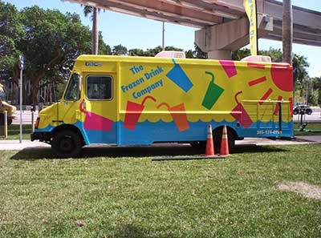
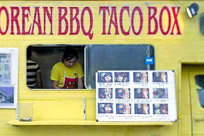
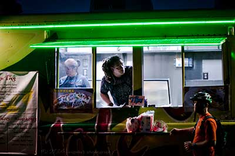

Southern Coast Festival of
LIGHTS
12-14 June 2021
About
The Southern Coast Festival of Lights is running again this year during the Queens Birthday Long Weekend (12th to the 14th of June 2021).
Joins us again to celebrate the community of Geelong and the unqiue beauty of the greater Bellarine Penisula.
This year the Festival is made up of:
- stalls featuring the work of local artists and designers,
- food trucks,
- games, prizes and competitions,
- live music,
- fireworks
- and much, much more.


"A place that is honoured in story and song,
Victoria's largest Rural City of famed old Geelong,"
"From Geelong City centre the sea is not far,
A fifteen minute walk one need not take a car,
But there is more to Geelong that even meets the eye,
In it's beautiful Parklands with the ocean nearby,"
"From Geelong City centre the sea is not far,
A fifteen minute walk one need not take a car,
But there is more to Geelong that even meets the eye,
In it's beautiful Parklands with the ocean nearby,"
Eating
Whats on offer at the Festival
This year we have more foodtrucks than ever before, with different falvour options all day and all night
Click on each image to find out more details off some of the food tucks specailities on offer.
- 
Caldonia Chinese
Traditional Chinese menu with a pacific island twist. Try their famous duck noodle dish.
- 
Dosa
Dosa offers Indian inspired vegatarian dishes, with heat ranges from mild to extreme. Dosa is bringing back their famous Paneer tikka masala this year.
- 
Blue Ice Cart
Handmade gourmet Ice Pops and Ice creams. Unqiue flavours, be quick to grab a "Spicy Bangkok Night Market" Pop.
- 
Dolce Vita Pizza
Traditional and modern food fire pizzas, made to order, from single slice to medium size. Try their Festival exclusive Geelong Pizza.
- 
The Wow Truck
The Wow Truck offers American comfort food, from burgers to tacos. Their lobster roll is a must try!
- 
The Frozen Drink Company
Even in winter a cold drink can go down a treat. The Frozen Drink Company not only provides ice cold slushies but also shaved ice, Hawaiin style.
- 
Korean BBQ Tacos
Kimchi, BBQ Beef, Gochujang sauce, all in a soft tortilla, what more can we say? Be aware they sold out last year.
- 
Tor Tas
Tor Tas offers a more traditional mexician fair with traditional tacos and huarache. If you have never had huarache, now is the time.
Blue Ice Cart
Handmade gourmet Ice Pops and Ice creams. Unqiue flavours, be quick to grab a "Spicy Bangkok Night Market" Pop.
"The magpie lark all day long is singing pee wee,
And the silver gulls call in their home by the sea."
"The magpie lark all day long is singing pee wee,
And the silver gulls call in their home by the sea."
Daylight Entertainment
During the daylight hours, the Festival plays hosts to live bands and solo artists, market stalls, street artists and games and competitions for all ages.


Night time Entertainment
After dark is when the Festival really takes off. This is a Festival of:
LIGHTS
after all. Live music continues, open air preformances (including the local fire turners and spinners), colmenating in fireworks displays every night.